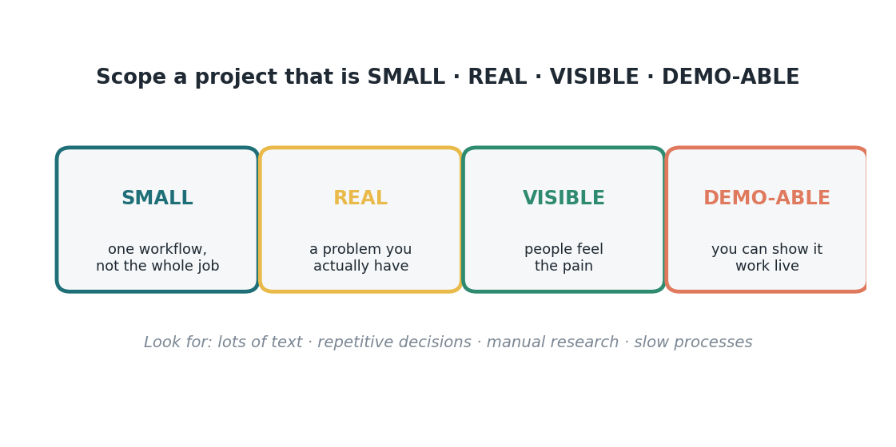
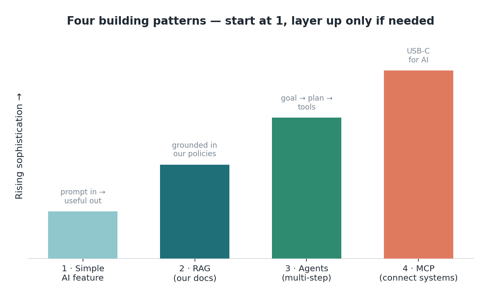

Jembatan 2 — Berpikir seperti seorang builder
Orang yang baru mulai membangun sering membayangkan versi paling ribet — sistem canggih yang nyambung ke semua database (Gambar B2.1) — jadi kewalahan, dan mundur. Mari kita lakukan kebalikannya. Ada empat cara membangun, dari yang sangat sederhana sampai yang lebih rumit, dan kamu hampir selalu mulai dari yang paling sederhana. Berpikir seperti seorang builder itu kebanyakan soal memilih tool dengan ukuran yang pas dan men-scope-nya cukup kecil buat bisa selesai.

Empat polanya, dalam bahasa finance yang sederhana dan urutan usaha: Pola 1 — fitur AI sederhana (prompt masuk, output berguna: ringkas denial ini, tulis draf balasan ini). Pola 2 — RAG (jawaban yang diakarkan ke kebijakan dan kontrak kita sendiri, lengkap kutipan). Pola 3 — agent (satu tujuan menggerakkan kerja multi-langkah yang pakai tool, dengan kamu yang review). Pola 4 — MCP (konektor universal — "USB-C buat AI" — yang bikin agent aman menjangkau sistem kita). Aturannya: mulai dari Pola 1 dan naik tingkat cuma kalau masalahnya beneran butuh. Kebanyakan proyek hackathon yang bagus itu Pola 1 yang dikerjain dengan baik.
Masalah mana, dan sekecil apa. Buat milih apa yang layak dibangun, pakai AI Opportunity Framework — kandidat kuat melibatkan banyak teks atau percakapan, keputusan berulang, riset manual, atau proses yang lambat (Gambar B2.2). Finance dan RCM banjir keempatnya. Terus scope dengan ketat: sasaran SMALL (satu workflow, bukan seluruh pekerjaanmu), REAL (masalah yang beneran kamu punya), VISIBLE (rasa sakit yang orang rasakan), dan DEMO-ABLE (bisa kamu tunjukkan bekerja langsung). Proyek yang kena keempatnya bisa selesai dalam satu hackathon dan ngalahin ide ambisius yang nggak pernah kamu jalankan.

Ada alasan buat bersikeras mulai dari bawah di tangga ini, dan itu adalah failure mode paling umum: pattern-chasing. Tim sering langsung ambil agent atau MCP karena kedengarannya canggih, padahal fitur Pola 1 sebenarnya bisa menyelesaikannya dalam sepersekian waktu. Perlakukan kecanggihan sebagai biaya, bukan lencana kebanggaan — tiap anak tangga ke atas membeli kapabilitas dengan harga usaha dan risiko gagal. Mulai sederhana, buktikan nilainya, naik cuma berdasarkan bukti. Urutan itu adalah prediktor terbesar apakah sebuah ide jadi demo yang beneran jalan saat show-and-tell.
Tetap pegang guardrail-nya waktu kamu mendesain. Pola apapun yang kamu pilih, manusia tetap ada di dalam loop — tool Pola 1 ngasih kamu draf buat dicek; agent mengantrekan kerjanya buat persetujuanmu; nggak ada yang menyentuh akun beneran tanpa seorang manusia. Men-scope kecil bukan cuma soal selesai tepat waktu; itu juga yang bikin build pertamamu aman dan gampang diawasi. Small, real, dan bisa direview adalah titik manis di mana semangat dan kehati-hatian bisa berjabat tangan.
Jadi berpikir seperti seorang builder itu bukan soal teknis (Gambar B2.3). Ini dua pertanyaan yang kamu ajukan ke tugas nyebelinmu: pola paling sederhana apa yang bisa bantu (biasanya Pola 1), dan gimana caranya bikin scope ini cukup kecil buat didemoin? Mulai sederhana, tetap kecil, naik tingkat cuma kalau perlu. Kamu udah punya judgment buat nge-pas-in ukuran — itu insting yang sama yang kamu pakai buat masalah lain di pekerjaanmu. Edisi berikutnya, hal terakhir yang berdiri antara kamu dan bulan Desember: keyakinan bahwa kamu berhak ada di ruangan itu.

Sumber
- Empat pola membangun (Simple feature, RAG, Agents, MCP); AI Opportunity Framework; scoping SMALL/REAL/VISIBLE/DEMO-ABLE — The AI Hackathon Guide (Karadimitriou, 2026), https://kosmas10.github.io/ai-hackathon-guide/
- MCP sebagai standar terbuka ("USB-C buat AI") — modelcontextprotocol.io.
Versi lain edisi ini
Ide yang sama, sudut pandang beda. Gaya Cerita (A) → · Data / ROI (B) →